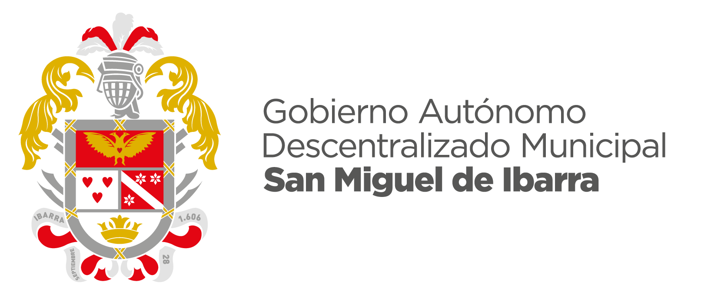

<ion-menu [content]="contenido">
    <ion-header>
        <ion-toolbar style="height: 150px;">
            
        </ion-toolbar>
    </ion-header>
    <ion-content style="background-color: rgb(237, 237, 238);">
        <ion-list >
            <button ion-item (click)="openPage(home)" style="background-color: rgb(237, 237, 238);"><strong style="color:#C40319;"><ion-icon name="home" padding></ion-icon> Home</strong></button>
            <button ion-item (click)="openPage(cat)" style="background-color: rgb(237, 237, 238);"><strong style="color:#C40319;"><ion-icon name="bookmark" padding></ion-icon>Atractivos Turísticos</strong></button>
            <button ion-item (click)="openPage(map)" style="background-color: rgb(237, 237, 238);"><strong style="color:#C40319;"><ion-icon name="map" padding></ion-icon>Ver Mapa</strong></button>
            <button ion-item (click)="openPage(opt)" style="background-color: rgb(237, 237, 238);"><strong style="color:#C40319;"><ion-icon name="settings" padding></ion-icon>Configuración</strong> </button>  
        </ion-list>
    </ion-content>
</ion-menu>


<ion-nav [root]="rootPage" #contenido></ion-nav>

